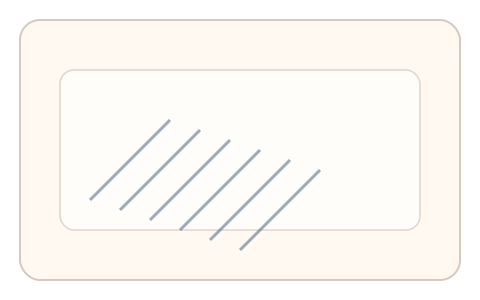
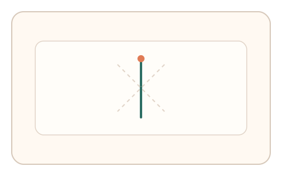
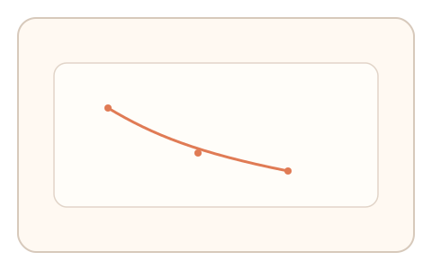

#125
D：单底座 × 单信号 × 自适应/短序列（视觉时域）
已扩展
倾斜后效递减
倾斜纹理适应后连续校准垂直线，记录偏差递减斜率进行判定。
概念原文
暴露倾斜纹理后进行 3 次快速“真垂直”校准，系统记录偏差衰减斜率并与群体基线对比。
用“后效衰减斜率”取代单次校准。
研究背景
倾斜后效会导致方向知觉偏移，并随时间衰减。偏差初值与衰减斜率具有个体特征。
核心机制
- 呈现固定角度倾斜纹理进行适应。
- 显示可调节的细线用于“真垂直”校准。
- 连续 3 次快速校准记录偏差。
- 计算衰减斜率与群体基线比对。
用户流程
- 步骤 1：用户观看倾斜纹理适应。
- 步骤 2：调节细线到垂直位置。
- 步骤 3：重复多次并记录偏差衰减。
判定信号
初始方向偏差
倾斜后效强度反映适应程度。
偏差衰减斜率
人类衰减呈连续下降而非瞬时恢复。
判定逻辑
初始偏差与衰减斜率需在合理区间且呈单调递减；异常平坦判异常。
对抗面
- 脚本始终设置为正垂直
- 重放真实用户的校准序列
防御与缓解
- 随机化倾斜角度与空间频率
- 调整适应时长与纹理位置
- 叠加反应时与微调信号
可达性与风险
提供低对比纹理或替代任务，避免视觉疲劳。
- 屏幕分辨率影响角度精度
- 用户疲劳导致误差增大
可视化状态

状态 1：倾斜适应
倾斜纹理作为适应刺激。

状态 2：垂直校准
调节细线到真垂直。

状态 3：衰减斜率
记录偏差随轮次递减。
参考资料
Tilt aftereffect
说明倾斜适应导致的方向偏移。
Aftereffect
说明知觉后效的衰减特征。